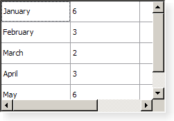

QTableWidget Class
The QTableWidget class provides an item-based table view with a default model. More...
| Header: | #include <QTableWidget> |
| CMake: | find_package(Qt6 REQUIRED COMPONENTS Widgets) target_link_libraries(mytarget PRIVATE Qt6::Widgets) |
| qmake: | QT += widgets |
| Inherits: | QTableView |
Properties
- columnCount : int
- rowCount : int
Public Functions
| QTableWidget(QWidget *parent = nullptr) | |
| QTableWidget(int rows, int columns, QWidget *parent = nullptr) | |
| virtual | ~QTableWidget() |
| QWidget * | cellWidget(int row, int column) const |
| void | closePersistentEditor(QTableWidgetItem *item) |
| int | column(const QTableWidgetItem *item) const |
| int | columnCount() const |
| int | currentColumn() const |
| QTableWidgetItem * | currentItem() const |
| int | currentRow() const |
| void | editItem(QTableWidgetItem *item) |
| QList<QTableWidgetItem *> | findItems(const QString &text, Qt::MatchFlags flags) const |
| QTableWidgetItem * | horizontalHeaderItem(int column) const |
| QModelIndex | indexFromItem(const QTableWidgetItem *item) const |
| bool | isPersistentEditorOpen(QTableWidgetItem *item) const |
| QTableWidgetItem * | item(int row, int column) const |
| QTableWidgetItem * | itemAt(const QPoint &point) const |
| QTableWidgetItem * | itemAt(int ax, int ay) const |
| QTableWidgetItem * | itemFromIndex(const QModelIndex &index) const |
| const QTableWidgetItem * | itemPrototype() const |
| QList<QTableWidgetItem *> | items(const QMimeData *data) const |
| void | openPersistentEditor(QTableWidgetItem *item) |
| void | removeCellWidget(int row, int column) |
| int | row(const QTableWidgetItem *item) const |
| int | rowCount() const |
| QList<QTableWidgetItem *> | selectedItems() const |
| QList<QTableWidgetSelectionRange> | selectedRanges() const |
| void | setCellWidget(int row, int column, QWidget *widget) |
| void | setColumnCount(int columns) |
| void | setCurrentCell(int row, int column) |
| void | setCurrentCell(int row, int column, QItemSelectionModel::SelectionFlags command) |
| void | setCurrentItem(QTableWidgetItem *item) |
| void | setCurrentItem(QTableWidgetItem *item, QItemSelectionModel::SelectionFlags command) |
| void | setHorizontalHeaderItem(int column, QTableWidgetItem *item) |
| void | setHorizontalHeaderLabels(const QStringList &labels) |
| void | setItem(int row, int column, QTableWidgetItem *item) |
| void | setItemPrototype(const QTableWidgetItem *item) |
| void | setRangeSelected(const QTableWidgetSelectionRange &range, bool select) |
| void | setRowCount(int rows) |
| void | setVerticalHeaderItem(int row, QTableWidgetItem *item) |
| void | setVerticalHeaderLabels(const QStringList &labels) |
| void | sortItems(int column, Qt::SortOrder order = Qt::AscendingOrder) |
| QTableWidgetItem * | takeHorizontalHeaderItem(int column) |
| QTableWidgetItem * | takeItem(int row, int column) |
| QTableWidgetItem * | takeVerticalHeaderItem(int row) |
| QTableWidgetItem * | verticalHeaderItem(int row) const |
| int | visualColumn(int logicalColumn) const |
| QRect | visualItemRect(const QTableWidgetItem *item) const |
| int | visualRow(int logicalRow) const |
Public Slots
| void | clear() |
| void | clearContents() |
| void | insertColumn(int column) |
| void | insertRow(int row) |
| void | removeColumn(int column) |
| void | removeRow(int row) |
| void | scrollToItem(const QTableWidgetItem *item, QAbstractItemView::ScrollHint hint = EnsureVisible) |
Signals
| void | cellActivated(int row, int column) |
| void | cellChanged(int row, int column) |
| void | cellClicked(int row, int column) |
| void | cellDoubleClicked(int row, int column) |
| void | cellEntered(int row, int column) |
| void | cellPressed(int row, int column) |
| void | currentCellChanged(int currentRow, int currentColumn, int previousRow, int previousColumn) |
| void | currentItemChanged(QTableWidgetItem *current, QTableWidgetItem *previous) |
| void | itemActivated(QTableWidgetItem *item) |
| void | itemChanged(QTableWidgetItem *item) |
| void | itemClicked(QTableWidgetItem *item) |
| void | itemDoubleClicked(QTableWidgetItem *item) |
| void | itemEntered(QTableWidgetItem *item) |
| void | itemPressed(QTableWidgetItem *item) |
| void | itemSelectionChanged() |
Protected Functions
| virtual bool | dropMimeData(int row, int column, const QMimeData *data, Qt::DropAction action) |
| virtual QMimeData * | mimeData(const QList<QTableWidgetItem *> &items) const |
| virtual QStringList | mimeTypes() const |
| virtual Qt::DropActions | supportedDropActions() const |
Reimplemented Protected Functions
Detailed Description

Table widgets provide standard table display facilities for applications. The items in a QTableWidget are provided by QTableWidgetItem.
If you want a table that uses your own data model you should use QTableView rather than this class.
Table widgets can be constructed with the required numbers of rows and columns:
tableWidget = new QTableWidget(12, 3, this);
Alternatively, tables can be constructed without a given size and resized later:
tableWidget = new QTableWidget(this);
tableWidget->setRowCount(10);
tableWidget->setColumnCount(5);
Items are created outside the table (with no parent widget) and inserted into the table with setItem():
QTableWidgetItem *newItem = new QTableWidgetItem(tr("%1").arg(
(row+1)*(column+1)));
tableWidget->setItem(row, column, newItem);
If you want to enable sorting in your table widget, do so after you have populated it with items, otherwise sorting may interfere with the insertion order (see setItem() for details).
Tables can be given both horizontal and vertical headers. The simplest way to create the headers is to supply a list of strings to the setHorizontalHeaderLabels() and setVerticalHeaderLabels() functions. These will provide simple textual headers for the table's columns and rows. More sophisticated headers can be created from existing table items that are usually constructed outside the table. For example, we can construct a table item with an icon and aligned text, and use it as the header for a particular column:
QTableWidgetItem *cubesHeaderItem = new QTableWidgetItem(tr("Cubes"));
cubesHeaderItem->setIcon(QIcon(QPixmap(":/Images/cubed.png")));
cubesHeaderItem->setTextAlignment(Qt::AlignVCenter);
The number of rows in the table can be found with rowCount(), and the number of columns with columnCount(). The table can be cleared with the clear() function.
See also QTableWidgetItem, QTableView, and Model/View Programming.
Property Documentation
columnCount : int
This property holds the number of columns in the table
By default, for a table constructed without row and column counts, this property contains a value of 0.
Access functions:
| int | columnCount() const |
| void | setColumnCount(int columns) |
rowCount : int
This property holds the number of rows in the table
By default, for a table constructed without row and column counts, this property contains a value of 0.
Access functions:
| int | rowCount() const |
| void | setRowCount(int rows) |
Member Function Documentation
[explicit] QTableWidget::QTableWidget(QWidget *parent = nullptr)
Creates a new table view with the given parent.
QTableWidget::QTableWidget(int rows, int columns, QWidget *parent = nullptr)
Creates a new table view with the given rows and columns, and with the given parent.
[virtual noexcept] QTableWidget::~QTableWidget()
Destroys this QTableWidget.
[signal] void QTableWidget::cellActivated(int row, int column)
This signal is emitted when the cell specified by row and column has been activated
[signal] void QTableWidget::cellChanged(int row, int column)
This signal is emitted whenever the data of the item in the cell specified by row and column has changed.
[signal] void QTableWidget::cellClicked(int row, int column)
This signal is emitted whenever a cell in the table is clicked. The row and column specified is the cell that was clicked.
[signal] void QTableWidget::cellDoubleClicked(int row, int column)
This signal is emitted whenever a cell in the table is double clicked. The row and column specified is the cell that was double clicked.
[signal] void QTableWidget::cellEntered(int row, int column)
This signal is emitted when the mouse cursor enters a cell. The cell is specified by row and column.
This signal is only emitted when mouseTracking is turned on, or when a mouse button is pressed while moving into an item.
[signal] void QTableWidget::cellPressed(int row, int column)
This signal is emitted whenever a cell in the table is pressed. The row and column specified is the cell that was pressed.
QWidget *QTableWidget::cellWidget(int row, int column) const
Returns the widget displayed in the cell in the given row and column.
Note: The table takes ownership of the widget.
See also setCellWidget().
[slot] void QTableWidget::clear()
Removes all items in the view. This will also remove all selections and headers. If you don't want to remove the headers, use QTableWidget::clearContents(). The table dimensions stay the same.
[slot] void QTableWidget::clearContents()
Removes all items not in the headers from the view. This will also remove all selections. The table dimensions stay the same.
void QTableWidget::closePersistentEditor(QTableWidgetItem *item)
Closes the persistent editor for item.
See also openPersistentEditor() and isPersistentEditorOpen().
int QTableWidget::column(const QTableWidgetItem *item) const
Returns the column for the item.
int QTableWidget::columnCount() const
Returns the number of columns.
Note: Getter function for property columnCount.
See also setColumnCount().
[signal] void QTableWidget::currentCellChanged(int currentRow, int currentColumn, int previousRow, int previousColumn)
This signal is emitted whenever the current cell changes. The cell specified by previousRow and previousColumn is the cell that previously had the focus, the cell specified by currentRow and currentColumn is the new current cell.
int QTableWidget::currentColumn() const
Returns the column of the current item.
See also currentRow() and setCurrentCell().
QTableWidgetItem *QTableWidget::currentItem() const
Returns the current item.
See also setCurrentItem().
[signal] void QTableWidget::currentItemChanged(QTableWidgetItem *current, QTableWidgetItem *previous)
This signal is emitted whenever the current item changes. The previous item is the item that previously had the focus, current is the new current item.
int QTableWidget::currentRow() const
Returns the row of the current item.
See also currentColumn() and setCurrentCell().
[override virtual protected] void QTableWidget::dropEvent(QDropEvent *event)
Reimplements: QAbstractItemView::dropEvent(QDropEvent *event).
[virtual protected] bool QTableWidget::dropMimeData(int row, int column, const QMimeData *data, Qt::DropAction action)
Handles the data supplied by a drag and drop operation that ended with the given action in the given row and column. Returns true if the data and action can be handled by the model; otherwise returns false.
See also supportedDropActions().
void QTableWidget::editItem(QTableWidgetItem *item)
Starts editing the item if it is editable.
[override virtual protected] bool QTableWidget::event(QEvent *e)
Reimplements: QAbstractItemView::event(QEvent *event).
QList<QTableWidgetItem *> QTableWidget::findItems(const QString &text, Qt::MatchFlags flags) const
Finds items that matches the text using the given flags.
QTableWidgetItem *QTableWidget::horizontalHeaderItem(int column) const
Returns the horizontal header item for column, column, if one has been set; otherwise returns nullptr.
See also setHorizontalHeaderItem().
QModelIndex QTableWidget::indexFromItem(const QTableWidgetItem *item) const
Returns the QModelIndex associated with the given item.
Note: In Qt versions prior to 5.10, this function took a non-const item.
[slot] void QTableWidget::insertColumn(int column)
Inserts an empty column into the table at column.
[slot] void QTableWidget::insertRow(int row)
Inserts an empty row into the table at row.
bool QTableWidget::isPersistentEditorOpen(QTableWidgetItem *item) const
Returns whether a persistent editor is open for item item.
See also openPersistentEditor() and closePersistentEditor().
QTableWidgetItem *QTableWidget::item(int row, int column) const
Returns the item for the given row and column if one has been set; otherwise returns nullptr.
See also setItem().
[signal] void QTableWidget::itemActivated(QTableWidgetItem *item)
This signal is emitted when the specified item has been activated
QTableWidgetItem *QTableWidget::itemAt(const QPoint &point) const
Returns a pointer to the item at the given point, or returns nullptr if point is not covered by an item in the table widget.
See also item().
QTableWidgetItem *QTableWidget::itemAt(int ax, int ay) const
Returns the item at the position equivalent to QPoint(ax, ay) in the table widget's coordinate system, or returns nullptr if the specified point is not covered by an item in the table widget.
See also item().
[signal] void QTableWidget::itemChanged(QTableWidgetItem *item)
This signal is emitted whenever the data of item has changed.
[signal] void QTableWidget::itemClicked(QTableWidgetItem *item)
This signal is emitted whenever an item in the table is clicked. The item specified is the item that was clicked.
[signal] void QTableWidget::itemDoubleClicked(QTableWidgetItem *item)
This signal is emitted whenever an item in the table is double clicked. The item specified is the item that was double clicked.
[signal] void QTableWidget::itemEntered(QTableWidgetItem *item)
This signal is emitted when the mouse cursor enters an item. The item is the item entered.
This signal is only emitted when mouseTracking is turned on, or when a mouse button is pressed while moving into an item.
QTableWidgetItem *QTableWidget::itemFromIndex(const QModelIndex &index) const
Returns a pointer to the QTableWidgetItem associated with the given index.
[signal] void QTableWidget::itemPressed(QTableWidgetItem *item)
This signal is emitted whenever an item in the table is pressed. The item specified is the item that was pressed.
const QTableWidgetItem *QTableWidget::itemPrototype() const
Returns the item prototype used by the table.
See also setItemPrototype().
[signal] void QTableWidget::itemSelectionChanged()
This signal is emitted whenever the selection changes.
See also selectedItems() and QTableWidgetItem::isSelected().
QList<QTableWidgetItem *> QTableWidget::items(const QMimeData *data) const
Returns a list of pointers to the items contained in the data object. If the object was not created by a QTreeWidget in the same process, the list is empty.
[virtual protected] QMimeData *QTableWidget::mimeData(const QList<QTableWidgetItem *> &items) const
Returns an object that contains a serialized description of the specified items. The format used to describe the items is obtained from the mimeTypes() function.
If the list of items is empty, nullptr is returned rather than a serialized empty list.
[virtual protected] QStringList QTableWidget::mimeTypes() const
Returns a list of MIME types that can be used to describe a list of tablewidget items.
See also mimeData().
void QTableWidget::openPersistentEditor(QTableWidgetItem *item)
Opens an editor for the give item. The editor remains open after editing.
See also closePersistentEditor() and isPersistentEditorOpen().
void QTableWidget::removeCellWidget(int row, int column)
Removes the widget set on the cell indicated by row and column.
[slot] void QTableWidget::removeColumn(int column)
Removes the column column and all its items from the table.
[slot] void QTableWidget::removeRow(int row)
Removes the row row and all its items from the table.
int QTableWidget::row(const QTableWidgetItem *item) const
Returns the row for the item.
int QTableWidget::rowCount() const
Returns the number of rows.
Note: Getter function for property rowCount.
See also setRowCount().
[slot] void QTableWidget::scrollToItem(const QTableWidgetItem *item, QAbstractItemView::ScrollHint hint = EnsureVisible)
Scrolls the view if necessary to ensure that the item is visible. The hint parameter specifies more precisely where the item should be located after the operation.
QList<QTableWidgetItem *> QTableWidget::selectedItems() const
Returns a list of all selected items.
This function returns a list of pointers to the contents of the selected cells. Use the selectedIndexes() function to retrieve the complete selection including empty cells.
See also selectedIndexes().
QList<QTableWidgetSelectionRange> QTableWidget::selectedRanges() const
Returns a list of all selected ranges.
See also QTableWidgetSelectionRange.
void QTableWidget::setCellWidget(int row, int column, QWidget *widget)
Sets the given widget to be displayed in the cell in the given row and column, passing the ownership of the widget to the table.
If cell widget A is replaced with cell widget B, cell widget A will be deleted. For example, in the code snippet below, the QLineEdit object will be deleted.
setCellWidget(row, column, new QLineEdit); ... setCellWidget(row, column, new QTextEdit);
See also cellWidget().
void QTableWidget::setColumnCount(int columns)
Sets the number of columns in this table's model to columns. If this is less than columnCount(), the data in the unwanted columns is discarded.
Note: Setter function for property columnCount.
See also columnCount() and setRowCount().
void QTableWidget::setCurrentCell(int row, int column)
Sets the current cell to be the cell at position (row, column).
Depending on the current selection mode, the cell may also be selected.
See also setCurrentItem(), currentRow(), and currentColumn().
void QTableWidget::setCurrentCell(int row, int column, QItemSelectionModel::SelectionFlags command)
Sets the current cell to be the cell at position (row, column), using the given command.
See also setCurrentItem(), currentRow(), and currentColumn().
void QTableWidget::setCurrentItem(QTableWidgetItem *item)
Sets the current item to item.
Unless the selection mode is NoSelection, the item is also selected.
See also currentItem() and setCurrentCell().
void QTableWidget::setCurrentItem(QTableWidgetItem *item, QItemSelectionModel::SelectionFlags command)
Sets the current item to be item, using the given command.
See also currentItem() and setCurrentCell().
void QTableWidget::setHorizontalHeaderItem(int column, QTableWidgetItem *item)
Sets the horizontal header item for column column to item. If necessary, the column count is increased to fit the item. The previous header item (if there was one) is deleted.
See also horizontalHeaderItem().
void QTableWidget::setHorizontalHeaderLabels(const QStringList &labels)
Sets the horizontal header labels using labels.
void QTableWidget::setItem(int row, int column, QTableWidgetItem *item)
Sets the item for the given row and column to item.
The table takes ownership of the item.
Note that if sorting is enabled (see sortingEnabled) and column is the current sort column, the row will be moved to the sorted position determined by item.
If you want to set several items of a particular row (say, by calling setItem() in a loop), you may want to turn off sorting before doing so, and turn it back on afterwards; this will allow you to use the same row argument for all items in the same row (i.e. setItem() will not move the row).
See also item() and takeItem().
void QTableWidget::setItemPrototype(const QTableWidgetItem *item)
Sets the item prototype for the table to the specified item.
The table widget will use the item prototype clone function when it needs to create a new table item. For example when the user is editing in an empty cell. This is useful when you have a QTableWidgetItem subclass and want to make sure that QTableWidget creates instances of your subclass.
The table takes ownership of the prototype.
See also itemPrototype().
void QTableWidget::setRangeSelected(const QTableWidgetSelectionRange &range, bool select)
Selects or deselects the range depending on select.
void QTableWidget::setRowCount(int rows)
Sets the number of rows in this table's model to rows. If this is less than rowCount(), the data in the unwanted rows is discarded.
Note: Setter function for property rowCount.
See also rowCount() and setColumnCount().
void QTableWidget::setVerticalHeaderItem(int row, QTableWidgetItem *item)
Sets the vertical header item for row row to item.
See also verticalHeaderItem().
void QTableWidget::setVerticalHeaderLabels(const QStringList &labels)
Sets the vertical header labels using labels.
void QTableWidget::sortItems(int column, Qt::SortOrder order = Qt::AscendingOrder)
Sorts all the rows in the table widget based on column and order.
[virtual protected] Qt::DropActions QTableWidget::supportedDropActions() const
Returns the drop actions supported by this view.
See also Qt::DropActions.
QTableWidgetItem *QTableWidget::takeHorizontalHeaderItem(int column)
Removes the horizontal header item at column from the header without deleting it.
QTableWidgetItem *QTableWidget::takeItem(int row, int column)
Removes the item at row and column from the table without deleting it.
QTableWidgetItem *QTableWidget::takeVerticalHeaderItem(int row)
Removes the vertical header item at row from the header without deleting it.
QTableWidgetItem *QTableWidget::verticalHeaderItem(int row) const
Returns the vertical header item for row row.
See also setVerticalHeaderItem().
int QTableWidget::visualColumn(int logicalColumn) const
Returns the visual column of the given logicalColumn.
QRect QTableWidget::visualItemRect(const QTableWidgetItem *item) const
Returns the rectangle on the viewport occupied by the item at item.
int QTableWidget::visualRow(int logicalRow) const
Returns the visual row of the given logicalRow.